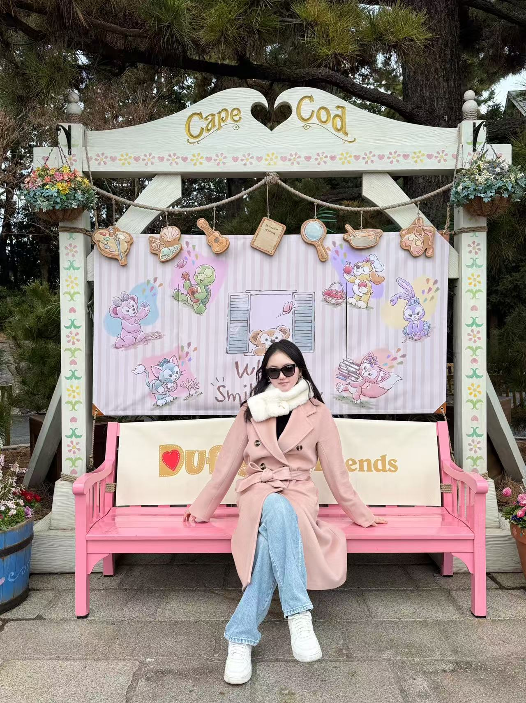
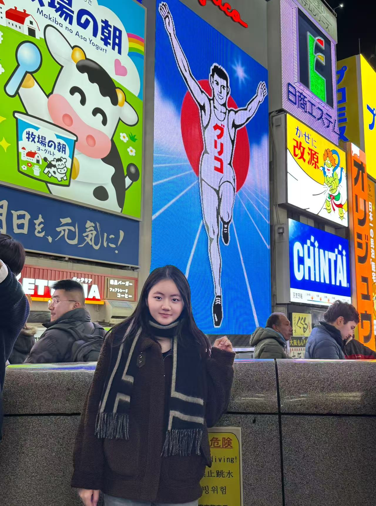
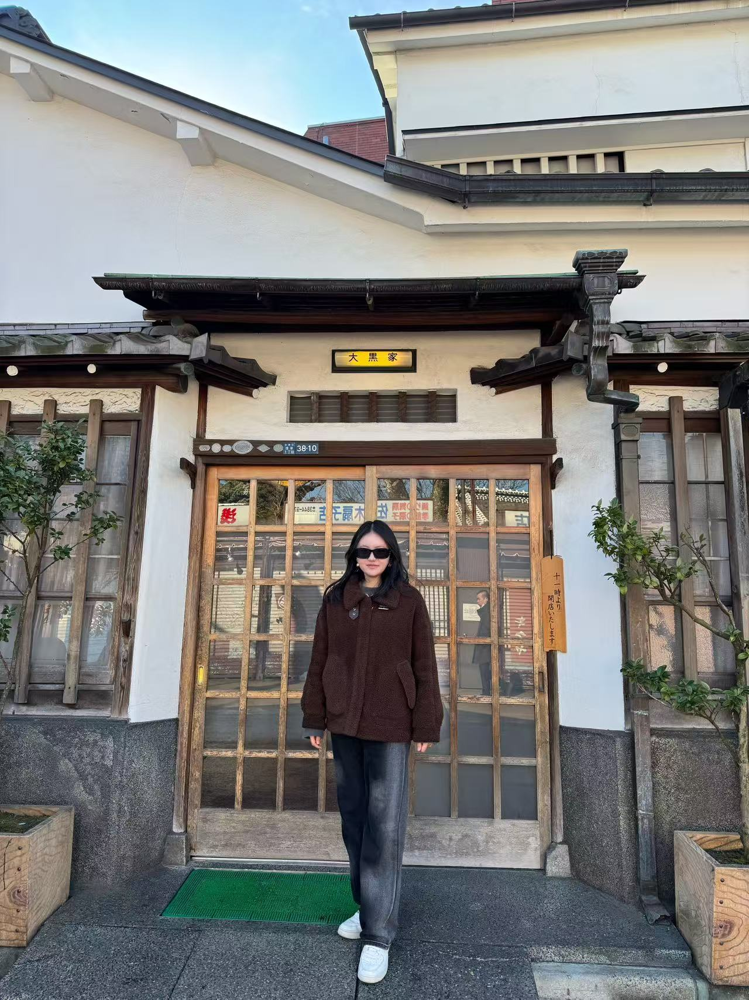

日本东京大阪双城记
行程亮点
- 东京塔夜景 — 俯瞰城市霓虹
- 大阪道顿堀 — 打卡「固力果奔跑人」地标
- 富士山五合目 — 近距离感受神山壮丽
- 浅草寺 — 穿和服漫步仲见世商店街
美食体验
在大阪黑门市场品尝现握寿司、烤鳗鱼饭；
道顿堀街头尝试章鱼烧、大阪烧和炸串；
东京新宿打卡机器人餐厅，体验科技与美食结合。
旅行相册



在大阪黑门市场品尝现握寿司、烤鳗鱼饭；
道顿堀街头尝试章鱼烧、大阪烧和炸串；
东京新宿打卡机器人餐厅，体验科技与美食结合。